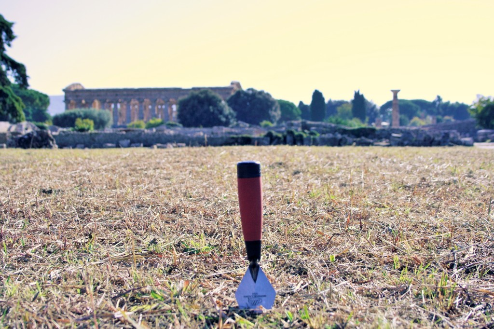
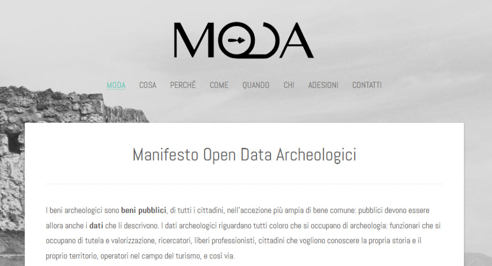

A venti giorni dall’Archeo Open Data Forum tenutosi alla Borsa Mediterranea del Turismo Archeologico, da anni luogo di incontro per gli archeologi italiani, non voglio fare un riassunto di quanto accaduto, che trovate sia nella prima parte di questo post, sia in questo video, ma piuttosto mettere in evidenza alcuni aspetti sia positivi, sia negativi, che mi sembrano rilevanti.
Pompei ha fatto la parte del leone
In questa occasione Pompei è uscita dall’angolo delle polemiche legate a crolli e appalti, per sposare innovazione, trasparenza e collaborazione. Il Soprintendente Massimo Osanna ha annunciato che presto saranno disseminati come dati aperti le immagini digitalizzate, la cartografia storica, i diari di scavo, gli elenchi dei materiali, alcuni dati cartografici vettoriali e tutti i relativi metadati. Non è un fatto da poco: se un sito archeologico dell’importanza internazionale di Pompei inizia a percorrere la via degli open data, verranno meno molti degli alibi che intralciano la strada di un’archeologia aperta. Una strada già tracciata dall’apertura del portale della trasparenza del Grande Progetto Pompei realizzato da Open Pompei: gli open data archeologici, infatti, non sono solo quelli inerenti a scavi e reperti, ma anche quelli connessi alla trasparenza amministrativa.
Gli open data sono trasversali
Questa non è una grande scoperta per chi si occupa da tempo di dati aperti: gli open data archeologici sono il campo di azione di differenti competenze e riguardano tutti. A dimostrarlo gli interventi di Luca Corsato, che con #beniculturaliaperti si batte per sottolineare l’importanza del riuso dei dati per una platea che non è solo quella degli addetti ai lavori, ma che è quella più ampia dei cittadini e degli imprenditori, di Vania Virgili, che ha spiegato come fare open data su larga scala necessiti di infrastrutture informatiche adeguate, e di Daniela Vellutino, linguista, che ha messo l’accenno sul problema della semantica connesso ai Linked Open Data.
Fare open data va di MODA

Il Forum è stato anche l’occasione per il lancio del Manifesto per gli Open Data Archeologici (MODA) promosso in maniera collaborativa – con annesso wiki – da un gruppo di archeologi che si definiscono “folli” nel senso Erasmiano del termine. Il Manifesto, che è un modo per diffondere in maniera partecipativa gli open data in archeologia, è il frutto della necessaria opera di formazione che deve essere fatta per incentivare le buone pratiche open data che attualmente esistono in Italia, come quelle portate avanti dal Laboratorio MAPPA (Università di Pisa) e dal MiBACT, ma anche per sostenere quelle ancora osteggiate, ma importantissime, del SITAR e quella futura di Pompei. Insomma gli open data devono diventare ancor più di MODA!
Poca chiarezza
Oltre ad un latente livello di confusione che permane tra i concetti di open data e open access (il più comune accesso aperto alle pubblicazioni scientifiche), a evidenziare quanto sia ancora lunga la strada per una reale consapevolezza nell’apertura dei dati in archeologia, perdurano ancora alcuni elementi critici.
Il primo è legato al riuso dei dati: lo scopo degli open data è il loro riutilizzo, ma se gli archeologi hanno una vaga idea di come poter utilizzare i dati aperti per la ricerca e per la tutela, meno chiare appaiono ai più le possibilità di riuso legate alla creazione di valore culturale ed economico che i dati archeologici (e più ampiamente dei beni culturali) aperti possono generare. Da questo punto di vista sono preziose le suggestioni di Emmanuele Curti e del lavoro di Matera 2019, per pensare a nuovi paradigmi archeologici e a un nuovo ruolo sociale dell’archeologia che coinvolga il territorio con una scambio tra virtuale e reale, tra dati e memoria.
Il secondo è legato al concetto di digitalizzazione. Si tratta di un concetto da superare, perché inteso come punto di arrivo, come passaggio dall’analogico al digitale, come semplice dematerializzazione, e da sostituire con il concetto di datificazione, cioè di immediata trasformazione in dati dell’archeologia, dei suoi processi, della sua pratica.
Il terzo è legato al modo di apertura e di validazione dei dati: chi come Letizia Gualandi lo vede come un processo dal basso, lasciando a ogni archeologo la responsabilità di aprire i propri dati per partecipare coscientemente al processo di condivisione e collaborazione, consegnado agli utilizzatori l’onere della validazione, secondo l’idea dell’open peer review; chi, invece, auspica un processo dall’alto guidato dal Ministero, ma partecipato da tutte le componenti dell’archeologia (professionisti compresi), come Giuliano Volpe, in cui il dato è validato dai funzionari stessi, come suggerisce Mirella Serlorenzi. La strada perfetta non esiste, di sicuro, se non si fosse partiti dal basso, non saremmo stati a Paestum a parlare di open data archeologici.
Ringraziamenti
Un personale ringraziamento a tutti coloro che hanno partecipato e in particolare a Cinzia Dal Maso che ha reso possibile questo incontro.


{kind=link}
{kind=link}
{kind=link}